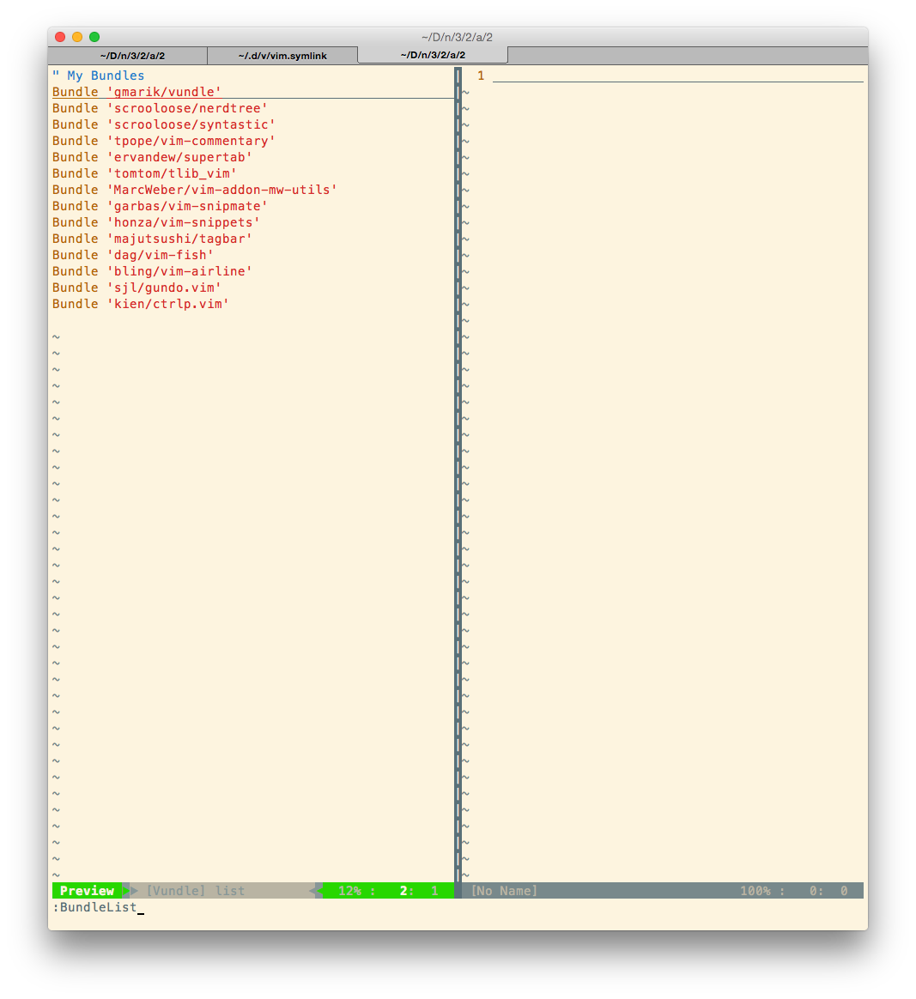

Vim: Usage and Beyond
Mark Mossberg, ENG 3302 Project 2
The material in this reference is specifically written and tested for use on Mac OS X from a command line environment, however nearly all of the material should be compatible with Linux. Most of the material should also work for graphical VIM environments (MacVim, GVim). Your mileage may vary for use on Windows. Additionally this guide isn't designed to be a comprehensive reference to VIM usage, the official VIM documentation already exists for that. Rather this guide is intended to be a practical introduction to VIM, while also covering areas less commonly seen in VIM guides, such as customization.
Quick Start
This section will provide the required information for users that want to get started using VIM immediately. However I strongly recommend reading through the rest of this document.
To open a document for editing, run
$ vim <filename>
Press i to enter Insert mode. Use the arrow keys to navigate the cursor to
the desired position and type as normal.
To save, press , type :w, and press . To begin editing again,
follow the instruction point above.
To exit VIM, press , type :q, and press . If you want to save
and quit, instead type ":wq" and press .
Overview
VIM, not undeservingly, has gained a reputation for being impossible to use, or at least having a very steep learning curve. This is due to the need to memorize many arcane, unintuitive commands and modes just for a purpose as basic as typing characters into a file.
This comic from the Internet does a good job of illustrating learning VIM vs other, more beginner friendly editors like Notepad and Pico.

Image taken from http://unix.stackexchange.com/questions/986
What is VIM?
VIM is a text editor, used for creating and editing plain text files. VIM is commonly used for writing computer programs but is more than capable of creating any sort of plain text document, like a "README.txt" file for example. VIM is also incredibly versatile and is available and fully functional in both graphical and text terminal based environments, lending itself to be used on both desktop and server operating systems.
What isn't VIM?
VIM is not a rich text editor. VIM is not designed for the type of text editing Microsoft Word is usually associated with and does not support text styling such as bold, italics, or underline.
Usage
Modes
VIM has four main modes that you switch between while using it.
- Normal mode: This is the mode VIM you in by default, and is where you can run editor commands. Commands are mainly used for navigation around the document, search, and deletion/cut-and-paste.
- Insert mode: This is the standard mode for actually writing text into the file.
You enter this mode by running the editor command
iwhile in normal mode. - Visual mode: This mode lets you select large blocks of text and perform
operations on them. This emulates the click and drag behavior of graphical
interfaces if you are using VIM in a text terminal. You enter this mode by
running the editor command
vwhile in normal mode. - Command Line mode: This mode lets you enter in VIM commands, distinct from the
above editor commands, that enable more advanced functionality such as
searching and replacing in the document, and configuring VIM settings. You
enter this mode by typing
:while in normal mode.
Basic Introduction
All commands referenced in this section refer to Normal mode commands.
Opening, Saving, Closing
To open a file in VIM, at a command line shell, type vim <filename> and press
enter. To save, run the command line command, w. To quit, run the command
line command q. These command line commands can be chained together; for
example, to save and quit, run wq in command line mode.
Navigation
Basic navigation in VIM is accomplished by using the hjkl keys, corresponding
to the "left", "down", "up", and "right" directions respectively. Arrow keys
also work, but use of them is discouraged since it is much faster to use hjkl
and keep your fingers on the home keyboard row. To move more quickly around in
VIM, the w, e, and b keys can also be used. w moves to the beginning of
the next word, e moves to the end of the next word, and b moves to the
beginning of the previous word. At any point, to reset VIM and clear any
commands that may have been entered, hit <escape>. To jump up and down half of
a window for page-up and page-down behavior, use Ctrl-d and Ctrl-u. To search
through the document, press /, type what you are searching for, and press
<enter>. This will search from the current cursor position. Press n to
proceed forward through the results, or N to go backwards.
Editing
Once you've navigated the cursor to a location where you would like to insert
text, press the i key to enter Insert mode. Now you can type as normal, using
characters keys, arrows and backspace/delete. To exit back into Normal mode,
press <escape>.
In Normal mode x and X can be used to delete the character currently under
the cursor, and the character before the cursor, respectively. The d can also
be paired with a navigational command to delete words or lines at a time. For
example, pressing de will delete every character until the end of the current
word. dd is a particularly useful command which deletes the entire line the
cursor is on.
Something that may be confusing to new VIM users is that there is no
distinction between deleting and cutting (referring to cut and paste). That is,
when any set of characters is deleted, it is automatically saved in buffer
space to be pasted when p, the paste command, is pressed. To copy characters,
rather than deleting them, the y key is used in the same fashion as the d
key. For example, pressing ye copies all characters until the end of the
current word. yy is also useful, and copies the current line.
For more details on any command, in Normal mode type :help <command> where
<command> is the command you need help with, and press enter. This will bring
up VIM's extensive documentation on that command or functionality.
Summary
Reminder: This is not a comprehensive list of all VIM commands, just common ones.
| Command | Mode | Action |
|---|---|---|
vim <filename> |
N/A (run outside vim) | open file |
<escape> |
Any | Reset VIM and switch to Normal mode |
i |
Normal | Enter Insert mode |
w |
Command Line | Save |
q |
Command Line | Quit |
wq |
Command Line | Save & Quit (Command chaining example) |
help <command> |
Command Line | Bring up VIM documentation on <command>
|
h |
Normal | Move cursor left |
j |
Normal | Move cursor down |
k |
Normal | Move cursor up |
l |
Normal | Move cursor right |
w |
Normal | Move cursor to beginning of next word |
e |
Normal | Move cursor to end of next word |
b |
Normal | Move cursor to beginning of previous word |
Ctrl-d |
Normal | Page down |
Ctrl-u |
Normal | Page up |
/ |
Normal | Search |
n |
Normal | Go to next search result |
N |
Normal | Go to previous search result |
x |
Normal | Delete character under cursor |
X |
Normal | (Backspace) Delete character before cursor |
d<navigation command> |
Normal | Delete in the direction the navigation command specifies. Saves deleted text in cut/paste buffer. |
dd |
Normal | Delete entire line |
y<navigation command> |
Normal | Yank (Saves text into copy/paste buffer). |
yy |
Normal | Yank entire line. |
Customization
VIM is highly configurable and the average user will likely modify VIM's
behavior to their personal preferences after beginning to use VIM. This can be done
within a VIM session using the set command line mode command. For example,
running set number in command line mode enables line numbers along the left
of the window. Configurations done with the set command will only last for
the lifetime of the VIM session (until VIM is quit). Persistent configurations
that apply to all VIM sessions go in a file named .vimrc which must be
located in the user's home directory on the system (usually referred to as
~). This file simply contains command line mode commands that vim will
run when it starts. VIM additionally also has a directory called .vim,
also within the user's home directory that is used for storing things like
plugins.
Common Customizations
-
syntax enable: activates programming language syntax highlighting -
number: activates line numbers -
nowrap: suppresses default line wrapping when a line gets longer than the window -
mouse=a: activates mouse usage in text terminals -
hlsearch: highlight search terms -
ignorecase: ignore letter case when searching
A sample .vimrc could look like this:
syntax enable
set nocompatible
set number
set splitbelow
set splitright
set ruler
set foldmethod=indent
set foldlevel=99
set nowrap
set colorcolumn=80
highlight ColorColumn ctermbg=7 " light grey color column
set noswapfile
set tabstop=4 shiftwidth=4 softtabstop=4 autoindent expandtab
set hlsearch incsearch ignorecase smartcase
Plugins
Plugins are computer programs written in a language called Vimscript that
further extend VIM's functionality. Many of them are available from the
official VIM plugin repository, however there are
also many available from websites like Github, which let users upload code
and other plain text files. Simple VIM plugins comes in
the form of a .vim file which can be placed in ~/.vim/plugins. For more
complex plugins, each file of the plugin needs to be placed the proper
directory.
Plugin Managers
Managing plugins manually can quickly become very complex, which is why most users will find using a plugin manager to be much easier. Two of the most popular ones include:
Pathogen
Pathogen was the first popular VIM plugin manager and simplifies plugin
installation to be as easy to downloading them into the ~/.vim/bundle
directory.
Vundle
Vundle is a newer VIM plugin manager
and is popular due to its direct integration with
Github and similarity to a package manager, like apt on Ubuntu Linux, for
example. With Vundle, URLs to plugins available from the internet, or local
file paths to plugins are specified in your .vimrc and then easily
installed/removed/updated via command line commands like BundleInstall.
The Vundle section of a .vimrc is below. The text in between quotes is the
part of a Github URL, following the http://github.com/.
" Vim plugins
Bundle 'scrooloose/nerdtree'
Bundle 'scrooloose/syntastic'
Bundle 'tpope/vim-commentary'
Bundle 'ervandew/supertab'
Bundle 'tomtom/tlib_vim'
Bundle 'MarcWeber/vim-addon-mw-utils'
Bundle 'garbas/vim-snipmate'
Bundle 'honza/vim-snippets'
Bundle 'majutsushi/tagbar'
Bundle 'dag/vim-fish'
Bundle 'bling/vim-airline'
Bundle 'sjl/gundo.vim'
Bundle 'kien/ctrlp.vim'
Using Vundle looks like:

Common/Recommended Plugins
- NerdTree: Creates a file browser within VIM which makes it much easier to navigate a project with multiple files
- Syntastic: Programming language syntax checking
- Snipmate: Easily insert certain textual snippets, useful for progammers
- Commentary: Easily comment out code